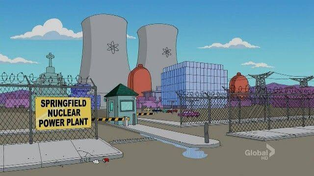
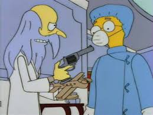
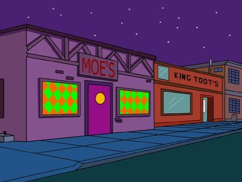
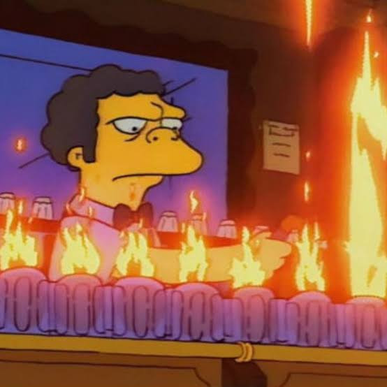
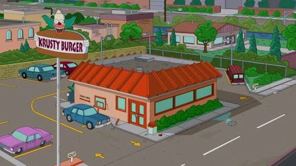
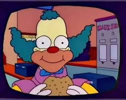

Descubre los lugares mas emblematicos de nuestra ciudad. Puedes ir directamenta a la seccion de Actividades Culturales para una experiencia más recreativa
Planta de Energía Nuclear de Springfield
Ubicacion: Zona Industrial.
Es el principal orgullo industrial de la ciudad, manejada por el gran empresario, el Sr. Charles Montgomery Burns, ésta planta genera energía limpia a todos los habitantes y cuenta con empleados de excelente calidad tecnica.
¿Qué hacer aquí? Los días sabados de 09:00 a 10:00 hay una visita guiada por el asistente personal del Sr. Burns, el Sr. Smithers.


Taberna de Moe
Ubicacion: Calle Wualnut
Esta taberna manejada por el agradable cantinero Moe Szyslak es el lugar ideal para relajarse y tomar una bebida acompañado de los ciudadanos locales.
¿Qué hacer aquí? De lunes a domingos de 12:00 a 21:00 (excepto los miercoles) se puede disfrutar de beber una cerveza Duff o la especialidad de la casa; La Llamarada Moe.


Krusty Burger
Ubicacion: Bulevar de Comida Rapida.
Si se quiere una salida familiar la cadena Krusty Burger es la opcion perfecta.
¿Qué hacer aquí? De lunes a domingos de 12:00 a 21:00. La cadena de comida rapida propiedad de Krusty el Payaso ofrece una deliciosa hamburguesa con carne de calidad premium que la coloca entre las mejores cadenas de comida rapida del país.

